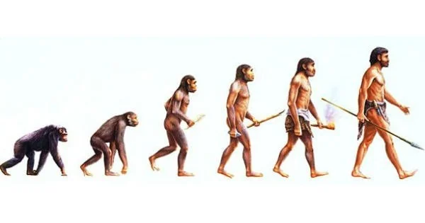

A evolução é um processo contínuo e dinâmico que ocorre em todas as formas de vida. Ela é responsável pela diversidade biológica presente no planeta Terra e tem sido estudada e discutida por cientistas e pesquisadores de diferentes áreas ao longo dos anos. Neste texto, faremos uma breve revisão sobre as principais teorias evolutivas e sua importância para o entendimento da biologia e da vida em nosso planeta.
A teoria da evolução por seleção natural é a mais conhecida e aceita pelos cientistas atualmente. Proposta por Charles Darwin no século XIX, essa teoria postula que as características de uma espécie são selecionadas naturalmente de acordo com a sua aptidão para o ambiente em que vivem. Isso significa que aqueles indivíduos que possuem características mais adaptativas têm maiores chances de sobreviver e deixar descendentes, passando essas características para as gerações futuras.
No entanto, outras teorias evolutivas também foram propostas ao longo dos anos, como a teoria do equilíbrio pontuado, proposta por Stephen Jay Gould e Niles Eldredge. Segundo essa teoria, a evolução ocorre de forma rápida e intensa em momentos de mudanças ambientais, mas pode ser bastante lenta e estável em períodos de estabilidade ambiental.
As evidências da evolução são diversas e foram coletadas ao longo de anos de pesquisa e estudo. Uma das evidências mais importantes é a existência de fósseis, que mostram a evolução de diferentes espécies ao longo do tempo geológico. A análise comparativa de estruturas anatômicas e moleculares também é uma forte evidência, já que espécies que compartilham características semelhantes provavelmente tiveram um ancestral comum. Além disso, a observação de processos evolutivos em tempo real, como a seleção natural em populações de animais e plantas, também é uma evidência importante e tem sido estudada em experimentos em laboratório e em campo.
Por outro lado, a conservação da biodiversidade é fundamental para garantir a sustentabilidade dos ecossistemas e das sociedades humanas. Existem diversas estratégias para a conservação da biodiversidade, incluindo a criação de áreas protegidas, a restauração de ecossistemas degradados, o manejo sustentável de recursos naturais e a conscientização da população sobre a importância da biodiversidade.
Figura 1. Evolução (Toda Matéria, 2018)
O estudo da evolução é fundamental para a compreensão da biologia e da vida em nosso planeta. Ele nos permite entender a diversidade das espécies e sua adaptação ao ambiente, bem como a origem e evolução de diferentes grupos de organismos.
A gestão de recursos hídricos é um exemplo de aplicação prática da ecologia na gestão de recursos naturais. A ecologia pode ser utilizada para entender os processos hidrológicos em uma bacia hidrográfica e para identificar as áreas críticas em termos de degradação ambiental. Com base nesses dados, podem ser desenvolvidas estratégias para a conservação e recuperação das áreas degradadas, bem como para o manejo sustentável da água.
Além disso, a evolução tem implicações importantes em diversas áreas, como a medicina, a agricultura e a conservação da biodiversidade. O conhecimento sobre a evolução de doenças e patógenos, por exemplo, é essencial para o desenvolvimento de tratamentos e vacinas eficazes. Na agricultura, a seleção artificial de plantas e animais tem como base os princípios da seleção natural e tem permitido a criação de variedades mais adaptadas e produtivas. Na conservação da biodiversidade, a compreensão da evolução e das relações entre as espécies é fundamental para o planejamento e a implementação de estratégias de conservação efetivas.
É importante ressaltar que o estudo da evolução não se limita apenas às ciências biológicas. A evolução também tem implicações filosóficas, religiosas e sociais. A ideia de que todas as espécies compartilham um ancestral comum, por exemplo, pode gerar debates em relação às origens da vida e à existência de Deus. Além disso, o estudo da evolução pode ter implicações sociais, como na definição de políticas públicas e na tomada de decisões em relação à conservação da biodiversidade.

Figura 2. Árvore da evolução (BrasilEscola, 2015)
Referências bibliográficas: